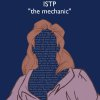

[ISTP]  Chức năng chủ đạo : Ti. Chức năng hỗ trợ : Se. Chức năng thứ cấp : Ni. Chức năng hạ cấp: Fe. ./ Điểm mạnh Những ISTPs quan sát một cách cẩn thận những gì đang diễn ra xung quanh họ. Sau đó khi cần thiết, họ nhanh chóng nắm bắt được cốt lõi của vấn đề, và giải quyết nó một cách hiệu quả và ít tốn công sức nhất. Họ quan tâm đến nguyên nhân và cách vận hành của mọi thứ, nhưng rất dễ nhàm chán đối với các lý thuyết trừu tượng trừ khi họ thể nhanh chóng áp dụng chúng vào cuộc sống thực tế. Họ có khả năng khắc phục sự cố rất tốt. ISTPs không thích luật lệ và quy tắc, họ phát triển rất tốt trong môi trường đa dạng và mới lạ, và thích thú với việc giải quyết những vấn đề cụ thể, trong một phạm vị rộng. ./ Những đặc điểm tiêu biểu. Họ dùng chức năng chủ đạo suy nghĩ hướng nội của mình để nhìn ra nguyên lý cơ bản của sự việc. Trí não họ hoạt động gần giống một chiếc máy tính: thu thập và sắp xếp dữ liệu cùng với những lập luận cực kì khách quan. Họ có khả năng đưa ra những quyết định hợp lí dựa trên một lượng lớn những dữ liệu cụ thể. ISTPs thường: . Phê bình theo chiều hướng khách quan. . Giải quyết vấn đề theo logic và phân tích. ISTPs là những người thực tế, tập trung nhiều vào việc 'nó là cái gì' và 'nó có thể làm được gì?' hơn là những khả-năng-có-thể dựa trên lý thuyết. Họ sáng tạo trong việc giải quyết những vấn đề ngay trước mắt và rất giỏi trong hoàn thành những công việc cần có sự chủ động. ISTPs thường có những đặc điểm sau: . Thực tế và thiết thực. . Chính xác và có tính thực tiễn cao. ISTPs là những người tin tưởng vào sự nỗ lực, họ luôn làm những điều cần thiết và hạn chế đến mức tối đa những cuộc thảo luận và sự trao đổi tương tác. Điều mà họ hướng tới chính là kết quả của công việc. ./ ISTPs trong mắt những người xung quanh. ISTPs là những người bình đẳng, họ có thể bao dung chấp nhận nhiều loại hành vi khác nhau, cho tới khi các nguyên tắc về sự logic bị xâm phạm. Khi đó, họ có thể sẽ làm người khác ngạc nhiên với những đánh giá cứng rắn và rõ ràng của họ. ISTPs lắng nghe người khác và có vẻ như đang đồng tình với quan điểm của người nói, bởi vì họ không phản đối ý kiến đó; nhưng sau đó, người khác có thể nhận ra rằng ISTPs thực chất đã phân tích và đưa ra đánh giá ở bên trong tâm trí họ. Với khả năng liên tục tìm kiếm thông tin và sự tập trung vào kết quả cuối cùng, ISTPs có thể thay đổi định hướng của mình một cách dễ dàng nếu như họ nhìn ra một con đường khác hiệu quả hơn. Điều này dẫn đến việc mọi người xung quanh sẽ gặp khó khăn trong việc nắm bắt họ. Họ có xu hướng trầm lắng và dè dặt, mặc dù họ có thể khá cởi mở trong những lĩnh vực họ chắc chắn về kiến thức của mình. ISTPs trong mắt mọi người thường có những tính cách sau: . Có khả năng thích ứng cao, chấp nhận rủi ro và hành động có định hướng. . Tự tin, độc lập và quyết đoán. ./ Những điểm quan trọng trong quá trình phát triển bản thân. Đôi khi, hoàn cảnh mổi trường bên ngoài cản trở ISTPs trong việc phát triển và thể hiện phần Giác quan và Tư duy của họ. . Nếu như họ không phát triển phần giác quan tốt, ISTPs có thể sẽ không có cách tiếp nhận thông tin một cách chính xác và đáng tin cậy về thế giới bên ngoài hoặc gặp khó khăn trong việc biến ý tưởng của mình thành những hành động cụ thể. . Nếu mặt tư duy của họ không phát triển, họ có thể sẽ bị cuốn theo thực tại xung quanh họ và không dành thời gian xử lý các dữ liệu thu thập được để có thể đưa ra quyết định hợp lý nhất. Hành động của họ có thể cẩu thả và không được suy xét kĩ càng, chỉ để đáp ứng những nhu cầu ngay trước mắt. Nếu như ISTPs không tìm ra được cho mình một môi trường thích hợp để họ có thể phát huy những tiềm năng sẵn có và những đóng góp cống hiến của họ được công nhận, họ thường thất vọng và có thể: . Phê bình một cách tiêu cực và hoài nghi thái quá. . Trì hoãn các quyết định của mình. Một cách tự nhiên, ISTPs có xu hướng không chú trọng tới phần cảm xúc và trực giác của họ. Tuy nhiên, nếu họ bỏ mặc chúng quá nhiều, họ có thể: . Bỏ qua những nhu cầu tình cảm và giá trị cá nhân của người khác. . Không ý thức được ảnh hưởng của quyết định của họ lên người khác. . Quá chú ý tới những kết quả trước mắt mà quên đi tình dài hạn của vấn đề. Khi căng thẳng quá mức, ISTPs có thể thể hiện những cảm xúc không phù hợp với hoàn cảnh. Kết quả là những cơn giận dữ hay những cảm xúc đau đớn của ISTPs khá là khó chịu đối với người khác và làm cho họ - những người luôn bình tĩnh và kiểm soát bản thân tốt - thấy xấu hổ. trích từ cuốn Introduction to types. dịch : @Linh